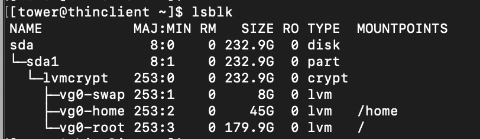
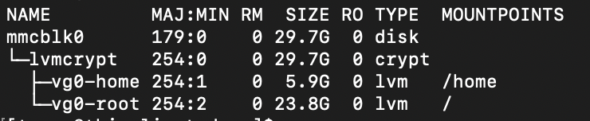
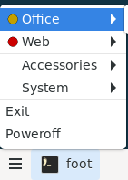

QA Script
Manually QA TowerOS
TowerOS-ThinClient Installation
| Feature | Action | Result |
|---|---|---|
| Disk is fully encrypted. | Restart without the USB key containing the boot partition. |
Doesn't Boot. |
Restart with the USB key containing the boot partition. |
Boots to Welcome Message. | |
| The welcome message is displayed. | Check the message above the login prompt. | A message should indicate the location of the documentation. |
| Default user is created. | Enter the chosen username and password. | You should log in. |
| Keyboard is configured. | Type some characters. | Check is OK. |
| Time Zone is configured. | [thinclient]$ date |
The date with the correct time zone. |
| Shell prompt is customized. | Check the shell prompt format. | [<username>@thinclient <current folder>]$ |
The swap partition must be 8Gb, the home partition must occupy 20% of the rest, and the root partition the remaining space. |
[thinclient]$ lsblk |
 |
supercronic service must be started. |
[thinclient]$ sudo rc-service supercronic status |
* status: started |
| Default user is sudoer without password. | [thinclient]$ sudo su |
Root session without a password being requested. |
| The documentation must be present in the ~/docs folder. | [thinclient]$ ls ~/docs |
List of documents. |
Documentation can be consulted with bat. |
[thinclient]$ bat ~/docs/usage.md |
Markdown viewer. |
| Tower CLI man page is installed. | [thinclient]$ man tower |
Tower CLI manual. |
eth0 must be configured with IP 192.168.2.100. |
[thinclient]$ ip ad |
 |
eth1 must be configured with IP 192.168.3.100. |
[thinclient]$ ip ad |
 |
eth0 MAC must be persistent. |
[thinclient]$ ip ad, reboot then [thinclient]$ ip ad. |
The value of link/ether for eth0 should not change after a reboot. |
iptables service must be started. |
[thinclient]$ sudo rc-service iptables status |
* status: iptables |
| Firewal must be correctly configured. | [thinclient]$ sudo iptables -L -v |
See configuration. |
| Wifi must be soft blocked. | [thinclient]$ rfkill list wifi |
Soft blocked: yes |
| Bluetooth must be soft blocked. | [thinclient]$ rfkill list bluetooth |
Soft blocked: yes |
labwc starts automatically after login if the option was chosen during installation. |
Boot. | labwc must start after login. |
labwc should properly start manually. |
[thinclient]$ dbus-launch labwc |
labwc must start. |
The sfwbar menu bar should appear correctly. |
[thinclient]$ dbus-launch labwc |
Menu bar must be present on the bottom. |
CopyQ must be correctly started. |
Check the presence of the icon in the taskbar. |  |
| The screen locker should activate correctly after 5 minutes of inactivity. | Stay inactive 5mn. | Black screen with password prompt. |
The latest version of tower cli must be installed. |
[thinclient]$ tower version |
Installed version. |
Hosts provisioning
| Feature | Action | Result |
|---|---|---|
router provisioning. |
[thinclient]$ tower provision router –wlan-ssid <ssid> –wlan-password <password> |
router is correctly provisioned |
| Online host provisioning. | [thinclient]$ tower provision web --online |
web is correctly provisioned |
| Offline host provisioning. | [thinclient]$ tower provision office --offline |
office is correctly provisioned |
| Disk is fully encrypted. | Restart hosts without the USB key containing the boot partition. |
Doesn't Boot. |
Restart with the USB key containing the boot partition. |
Boots correctly. | |
All hosts must be up |
[thinclient]$ tower status |
Should display all hosts with status up. |
| SSH must be configured | [thinclient]$ ssh <host> |
Open a SSH session without requesting password |
| Host keyboard is configured. | Plug a keyboard and a screen into the host and type some characters. | Check is OK. |
| Default user is created. | [thinclient]$ ssh <host> 'echo $USER' |
Shows the same default user as the thinclient. |
| Time Zone is configured. | [thinclient]$ ssh <host> date |
The date with the same time zone as the thinclient. |
| Online hosts must be connected. | [thinclient]$ ssh web ping www.google.com |
Ping result. |
| Offline hosts must not be connected. | [thinclient]$ ssh office ping www.google.com |
ping: bad address 'www.google.com' |
iptables service must be started. |
[thinclient]$ ssh <host> 'sudo rc-service iptables status' |
* status: iptables |
| Firewal must be correctly configured. | [thinclient]$ ssh <host> 'sudo iptables -L -v' |
See configuration. |
eth0 must be configured on the network 192.168.2.0/24 for online hosts |
[thinclient]$ ssh web ip ad |
 |
eth0 must be configured on the network 192.168.3.0/24 for offline hosts |
[thinclient]$ ssh office ip ad |
[thinclient]$ ssh web ip ad |
On the router the MAC of wlan0 must be different at each startup. |
[thinclient]$ ssh router ip ad, reboot the router, then [thinclient]$ ssh router ip ad. |
The value of link/ether for wlan0 should change after each reboot. |
The home partition must occupy 20% and the root partition the remaining space. |
[thinclient]$ ssh <host> lsblk |
 |
| Shell prompt is customized. | [thinclient]$ ssh <host> |
[<username>@<host> <current folder>]$ |
| Each host has a different shell color. | [thinclient]$ ssh <host> on all hosts. |
The prompt colors are different. |
Wifi must be soft blocked on all hosts except the router. |
[thinclient]$ ssh <host> rfkill list wifi |
Soft blocked: yes |
Wifi must not be soft blocked on the router. |
[thinclient]$ ssh router rfkill list wifi |
Soft blocked: no |
| Bluetooth must be soft blocked on all hosts. | [thinclient]$ ssh <host> rfkill list bluetooth |
Soft blocked: yes |
| Default user is sudoer without password. | [thinclient]$ ssh <host> sudo su |
Root session without a password being requested. |
| Tower widget must be correctly started. | Check the presence of the widget in the taskbar. |  |
| Tower widget should display down hosts in red. | Turn off one of the hosts and check the taskbar. |
Execution and installation of applications
Once the router is installed:
| Feature | Action | Result |
|---|---|---|
| APK packages can be installed on the Thin Client | [thinclient]$ tower install thinclient fortune[thinclient]$ fortune |
Random message. |
| APK packages can be installed on online host | [thinclient]$ tower install web fortune[thinclient]$ fortune |
Random message. |
| APK packages can be installed on offline host | [thinclient]$ tower install office fortune[thinclient]$ fortune |
Random message. |
Once installed, graphical applications should appear in the sfwbar menu with icons. |
[thinclient]$ tower install office galculator then check the taskbar menu. |
 |
| In the taskbar menu each host is differentiated by a colored circle. | check the taskbar menu. |  |
| Host shell prompt color matches with the menu. | [thinclient]$ ssh <host> |
Prompt color should be the same as the circle in the menu. |
| SSH welcome message is disabled. | [thinclient]$ ssh <host> |
No message before the prompt. |
Graphical applications can be launched via the sfwbar menu. |
Click on the desired application. | Application should be launched. |
| Graphical applications can be launched via the terminal. | [thinclient]$ tower <host> run <application> |
Application should be launched. |
| Copy/past is possible between two hosts. | Open two graphicals application on two different host and try a copy/past. | Past must work. |
| Online applications must work correctly on online hosts. | [thinclient]$ tower web install midori[thinclient]$ tower web run midori |
You can browse the web. |
tor proxy is enabled for online host. |
[thinclient]$ ssh web curl --socks5 192.168.2.1:9050 https://check.torproject.org/api/ip |
{"IsTor":true,"IP":"109.70.100.71"} |
| The time on online hosts must be correct. | [thinclient]$ ssh web date |
The correct date and time. |
TowerOS-ThinClient Upgrade
In addition to all the points listed for installing TowerOS-ThinClient:
| Feature | Action | Result |
|---|---|---|
the new version of tower cli must be installed. |
[thinclient]$ tower version |
The new version. |
| All previously installed hosts must be accessible. | [thinclient]$ tower status |
List of previously installed hosts. |
The sfwbar menu must display all applications previously installed on the hosts. |
Check the taskbar menu. | Previously installed applications must be here. |
The sfwbar widget indicating the host status must include all the hosts. |
Check the taskbar. | |
| The contents of the home partition must be completely preserved. | [thinclient]$ ls ~/ |
The same content as before the upgrade. |
Host Upgrade
In addition to all the points listed for Hosts provisioning:
| Feature | Action | Result |
|---|---|---|
| The new version of TowerOS-Host must be installed. | [thinclient]$ tower status <host> |
The new version. |
All applications installed with tower install must be reinstalled. |
Check the taskbar menu. | Previously installed applications must be here. |
| The contents of the home partition must be completely preserved. | [thinclient]$ ssh <host> ls ~/ |
The same content as before the upgrade. |